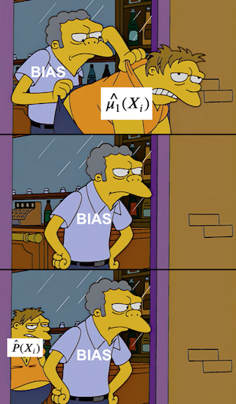

import warnings
warnings.filterwarnings('ignore')
import pandas as pd
import numpy as np
from matplotlib import style
from matplotlib import pyplot as plt
import seaborn as sns
%matplotlib inline
style.use("fivethirtyeight")
pd.set_option("display.max_columns", 6)第十二章: 双重稳健估计
不要把所有的鸡蛋放在一个篮子里
我们已经学会了如何使用线性回归和倾向得分加权来估计 \(E[Y|T=1] - E[Y|T=0] |X\)。但是我们应该在什么时候使用哪一个呢？在不明确的情况下，请同时使用两者！双重稳健估计是一种将倾向得分和线性回归相结合的方法，您不必依赖它们中的任何一种。
为了了解这是如何工作的，让我们考虑一下心态实验。这是一项在美国公立高中进行的随机研究，旨在发现成长心态的影响。它的工作方式是学校邀请学生参加一个研讨会，向他们灌输一种成长的心态。然后，他们跟踪学生在大学期间的表现，并衡量他们在学业上的表现。这个衡量结果被编译为标准化的成就分数。为了保护学生的隐私，这项研究的真实数据没有公开。但是，我们有一个与 Athey 和 Wager 提供的统计属性相同的模拟数据集，因此我们将改为使用这个数据来进行分析。
data = pd.read_csv("./data/learning_mindset.csv")
data.sample(5, random_state=5)| schoolid | intervention | achievement_score | ... | school_ethnic_minority | school_poverty | school_size | |
|---|---|---|---|---|---|---|---|
| 259 | 73 | 1 | 1.480828 | ... | -0.515202 | -0.169849 | 0.173954 |
| 3435 | 76 | 0 | -0.987277 | ... | -1.310927 | 0.224077 | -0.426757 |
| 9963 | 4 | 0 | -0.152340 | ... | 0.875012 | -0.724801 | 0.761781 |
| 4488 | 67 | 0 | 0.358336 | ... | 0.315755 | 0.054586 | 1.862187 |
| 2637 | 16 | 1 | 1.360920 | ... | -0.033161 | -0.982274 | 1.591641 |
5 rows × 13 columns
虽然这项研究做了随机化处理，但这些数据并不是没有出现混淆的情况。其中一个可能的原因是，干预变量是通过学生是否收到研讨会邀请来衡量的。因此，尽管被邀请参与的机会是随机的，但是否真的参与却不是。我们在这里处理一个不服从（non-compliance）的情况。这方面的一个证据是学生对成功的期望是如何与是否参加研讨会相关联的。自我报告中期望较高的学生更有可能参加成长心态研讨会。
data.groupby("success_expect")["intervention"].mean()success_expect
1 0.271739
2 0.265957
3 0.294118
4 0.271617
5 0.311070
6 0.354287
7 0.362319
Name: intervention, dtype: float64正如已经学习到的，我们可以通过使用线性回归或者逻辑回归估计倾向得分模型的方法来调整不服从的情况。在做回归之前，我们需要将份类变量转化为虚拟变量。
categ = ["ethnicity", "gender", "school_urbanicity"]
cont = ["school_mindset", "school_achievement", "school_ethnic_minority", "school_poverty", "school_size"]
data_with_categ = pd.concat([
data.drop(columns=categ), # dataset without the categorical features
pd.get_dummies(data[categ], columns=categ, drop_first=False) # categorical features converted to dummies
], axis=1)
print(data_with_categ.shape)(10391, 32)我们现在已经准备好了解双重稳健估计的工作原理。
双重稳健估计

我不会推导出估算器，而是首先向您展示它，然后才告诉您为什么它很棒。
\[ \hat{ATE} = \frac{1}{N}\sum \bigg( \dfrac{T_i(Y_i - \hat{\mu_1}(X_i))}{\hat{P}(X_i)} + \hat {\mu_1}(X_i) \bigg) - \frac{1}{N}\sum \bigg( \dfrac{(1-T_i)(Y_i - \hat{\mu_0}(X_i))}{1-\hat{P}(X_i)} + \hat{\mu_0}(X_i) \bigg) \]
其中 \(\hat{P}(x)\) 是对倾向得分的估计（例如，使用逻辑回归），\(\hat{\mu_1}(x)\) 是对倾向得分的估计\(E[Y|X, T=1]\) （例如使用线性回归），而 \(\hat{\mu_0}(x)\) 是对 \(E[ Y|X, T=0]\)。正如您可能已经猜到的那样，双重稳健估计器的第一部分估计 \(E[Y_1]\)，第二部分估计 \(E[Y_0]\)。让我们检查第一部分，因为所有直觉也将通过类比适用于第二部分。
因为我一开始就知道这个公式很吓人（但别担心，你会看到它超级简单），我将首先展示如何编写这个估计器。我觉得有些人对代码的恐惧不如对公式的恐惧。让我们看看这个估计器在实践中是如何工作的，好吗？
from sklearn.linear_model import LogisticRegression, LinearRegression
def doubly_robust(df, X, T, Y):
ps = LogisticRegression(C=1e6).fit(df[X], df[T]).predict_proba(df[X])[:, 1]
mu0 = LinearRegression().fit(df.query(f"{T}==0")[X], df.query(f"{T}==0")[Y]).predict(df[X])
mu1 = LinearRegression().fit(df.query(f"{T}==1")[X], df.query(f"{T}==1")[Y]).predict(df[X])
return (
np.mean(df[T]*(df[Y] - mu1)/ps + mu1) -
np.mean((1-df[T])*(df[Y] - mu0)/(1-ps) + mu0)
)T = 'intervention'
Y = 'achievement_score'
X = data_with_categ.columns.drop(['schoolid', T, Y])
doubly_robust(data_with_categ, X, T, Y)0.3882222817222756双重稳健估计者说，就成就而言，我们应该期望参加心态研讨会的个人比未经治疗的同伴高 0.388 个标准差。 再一次，我们可以使用 bootstrap 来构建置信区间。
from joblib import Parallel, delayed # for parallel processing
np.random.seed(88)
# run 1000 bootstrap samples
bootstrap_sample = 1000
ates = Parallel(n_jobs=4)(delayed(doubly_robust)(data_with_categ.sample(frac=1, replace=True), X, T, Y)
for _ in range(bootstrap_sample))
ates = np.array(ates)print(f"ATE 95% CI:", (np.percentile(ates, 2.5), np.percentile(ates, 97.5)))sns.distplot(ates, kde=False)
plt.vlines(np.percentile(ates, 2.5), 0, 20, linestyles="dotted")
plt.vlines(np.percentile(ates, 97.5), 0, 20, linestyles="dotted", label="95% CI")
plt.title("ATE Bootstrap Distribution")
plt.legend();现在我们已经了解了双重稳健估计器，让我们来看看为什么它如此出色。首先，它被称为双重鲁棒，因为它只需要模型之一，\(\hat{P}(x)\) 或 \(\hat{\mu}(x)\) 是正确的指定的。要了解这一点，请查看估计 \(E[Y_1]\) 的第一部分并仔细查看它。
\[ \hat{E}[Y_1] = \frac{1}{N}\sum \bigg( \dfrac{T_i(Y_i - \hat{\mu_1}(X_i))}{\hat{P}(X_i)} + \hat{\mu_1}(X_i) \bigg) \]
假设 \(\hat{\mu_1}(x)\) 是正确的。如果倾向得分模型是错误的，我们不需要担心。因为如果 \(\hat{\mu_1}(x)\) 是正确的，那么 \(E[T_i(Y_i - \hat{\mu_1}(X_i))]=0\)。那是因为 \(T_i\) 的乘法只选择了被处理的，并且 \(\hat{\mu_1}\) 在被处理的残差上，根据定义，均值为零。这导致整个事情减少到 \(\hat{\mu_1}(X_i)\)，这是通过假设正确估计的 \(E[Y_1]\)。所以，你看，通过正确，\(\hat{\mu_1}(X_i)\) 消除了倾向得分模型的相关性。我们可以应用相同的推理来理解 \(E[Y_0]\) 的估计量。
但不要相信我的话。让代码告诉你方向！在下面的估计器中，我用一个从 0.1 到 0.9 的随机统一变量替换了估计倾向得分的逻辑回归（我不希望非常小的权重破坏我的倾向得分方差）。由于这是随机的，所以它不可能是一个好的倾向得分模型，但我们将看到双重稳健估计器仍然设法产生一个非常接近于使用逻辑回归估计倾向得分时的估计值。
from sklearn.linear_model import LogisticRegression, LinearRegression
def doubly_robust_wrong_ps(df, X, T, Y): # wrong PS model np.random.seed(654) ps = np.random.uniform(0.1, 0.9, df.shape[0]) mu0 = LinearRegression().fit(df.query(f”{T}==0”)[X], df.query(f”{T}==0”)[Y]).predict(df[X]) mu1 = LinearRegression().fit(df.query(f”{T}==1”)[X], df.query(f”{T}==1”)[Y]).predict(df[X]) return ( np.mean(df[T](df[Y] - mu1)/ps + mu1) - np.mean((1-df[T])(df[Y] - mu0)/(1-ps) + mu0) )
doubly_robust_wrong_ps(data_with_categ, X, T, Y)如果我们使用自助采样法，我们可以看到，相比基于逻辑回归的倾向得分，方差会稍高一点。
np.random.seed(88)
parallel_fn = delayed(doubly_robust_wrong_ps)
wrong_ps = Parallel(n_jobs=4)(parallel_fn(data_with_categ.sample(frac=1, replace=True), X, T, Y)
for _ in range(bootstrap_sample))
wrong_ps = np.array(wrong_ps)print(f"ATE 95% CI:", (np.percentile(ates, 2.5), np.percentile(ates, 97.5)))这涵盖了倾向模型错误但结果模型正确的情况。其他情况呢？让我们再好好看看估计器的第一部分，但让我们重新排列一些术语
\[ \hat{E}[Y_1] = \frac{1}{N}\sum \bigg( \dfrac{T_i(Y_i - \hat{\mu_1}(X_i))}{\hat{P}(X_i)} + \hat{\mu_1}(X_i) \bigg) \]
\[ \hat{E}[Y_1] = \frac{1}{N}\sum \bigg( \dfrac{T_iY_i}{\hat{P}(X_i)} - \dfrac{T_i\hat{\mu_1}(X_i )}{\hat{P}(X_i)} + \hat{\mu_1}(X_i) \bigg) \]
\[ \hat{E}[Y_1] = \frac{1}{N}\sum \bigg( \dfrac{T_iY_i}{\hat{P}(X_i)} - \bigg(\dfrac{T_i}{\hat{ P}(X_i)} - 1\bigg) \hat{\mu_1}(X_i) \bigg) \]
\[ \hat{E}[Y_1] = \frac{1}{N}\sum \bigg( \dfrac{T_iY_i}{\hat{P}(X_i)} - \bigg(\dfrac{T_i - \hat{P }(X_i)}{\hat{P}(X_i)}\bigg) \hat{\mu_1}(X_i) \bigg) \]
现在，假设正确指定了倾向得分 \(\hat{P}(X_i)\)。在这种情况下，\(E[T_i - \hat{P}(X_i)]=0\)，它消除了依赖于 \(\hat{\mu_1}(X_i)\) 的部分。这使得双重鲁棒估计器减少为倾向得分加权估计器 \(\frac{T_iY_i}{\hat{P}(X_i)}\)，假设是正确的。因此，即使 \(\hat{\mu_1}(X_i)\) 是错误的，只要正确指定了倾向得分，估计器仍然是正确的。
再一次，如果你更相信代码而不是公式，这里就是实际验证。在下面的代码中，我用随机正态变量替换了两个回归模型。毫无疑问 \(\hat{\mu}(X_i)\) 没有正确指定。尽管如此，我们仍将看到双重稳健估计仍设法恢复我们之前看到的大约 0.38 的相同 \(\hat{ATE}\)。
from sklearn.linear_model import LogisticRegression, LinearRegression
def doubly_robust_wrong_model(df, X, T, Y):
np.random.seed(654)
ps = LogisticRegression(C=1e6).fit(df[X], df[T]).predict_proba(df[X])[:, 1]
# wrong mu(x) model
mu0 = np.random.normal(0, 1, df.shape[0])
mu1 = np.random.normal(0, 1, df.shape[0])
return (
np.mean(df[T]*(df[Y] - mu1)/ps + mu1) -
np.mean((1-df[T])*(df[Y] - mu0)/(1-ps) + mu0)
)doubly_robust_wrong_model(data_with_categ, X, T, Y)同样的，我们可以通过使用自助采样法看到方差还是相对高一点。
np.random.seed(88)
parallel_fn = delayed(doubly_robust_wrong_model)
wrong_mux = Parallel(n_jobs=4)(parallel_fn(data_with_categ.sample(frac=1, replace=True), X, T, Y)
for _ in range(bootstrap_sample))
wrong_mux = np.array(wrong_mux)print(f"ATE 95% CI:", (np.percentile(ates, 2.5), np.percentile(ates, 97.5)))我希望我已经让你相信双重稳健估计的力量。它之所以神奇，是因为在因果推理中，有两种方法可以从我们的因果估计中消除偏见：您可以对干预机制或结果机制进行建模。如果这些模型中的任何一个都是正确的，那么您就可以开始了。
一个需要警惕的地方是，在实践中，很难对其中任何一个进行精确建模。更常见的情况是，倾向得分和结果模型都不是 100% 正确的。他们都错了，但方式不同。发生这种情况时， 是使用单一模型最好还是使用双重稳健估计更佳，目前还没有一个定论[1] [2] [3]。至于我，我仍然喜欢对两种方法都考虑一下，因为至少给了我两种正确的可能性。
关键思想
在这里，我们看到了一种将线性回归与倾向得分相结合的简单方法，以产生双重稳健的估计量。这个估计器之所以有这个名字，是因为它只需要一个模型是正确的。如果倾向得分模型是正确的，即使结果模型是错误的，我们也能够识别因果效应。另一方面，如果结果模型是正确的，即使倾向评分模型是错误的，我们也能够识别因果效应。